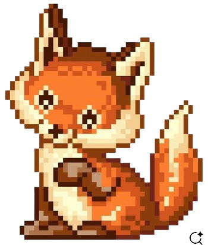
MAMMAL
Red Fox
Vulpes vulpes
Foxes use their excellent hearing to help locate prey.
 Find a friend ✿
Find a friend ✿
✧ YOUR LITTLE CORNER OF NATURE ✧
A tiny world full of extraordinary life. Come meet the creatures, discover their secrets, and fall a little more in love with our planet.
Let's wander! →Made for the endlessly curious ♡


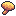
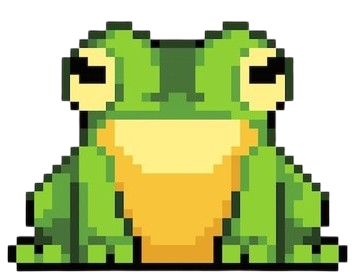
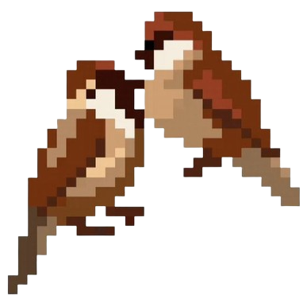

A WORLD TO GET LOST IN
Every little corner holds a new discovery.
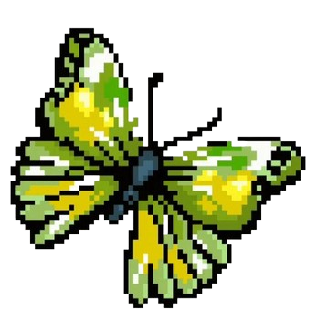
Meet the plants, animals, fungi, and tiny organisms sharing our world.
Meet the locals ↗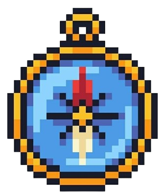
Travel from lush forests to deep oceans and discover how life connects.
Explore habitats ↗
Strange facts, tiny lessons, and natural wonders that sound made up.
Feed your curiosity ↗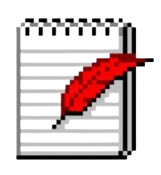
Collect observations and start noticing the magic in everyday nature.
Start observing ↗YOUR NEIGHBOURS ON EARTH
Every species has something worth knowing.

Vulpes vulpes
Foxes use their excellent hearing to help locate prey.
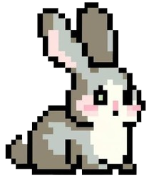
Oryctolagus cuniculus
Rabbits have eyes positioned on the sides of their heads, giving them a wide field of view.
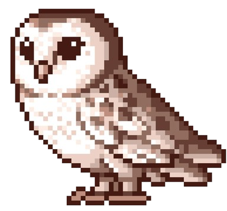
Strigiformes
Many owls have specialized feathers that help them fly quietly.
Anura
Many frogs begin life as aquatic tadpoles before transforming into adults.
A LITTLE SCIENCE BREAK
Fungi are more closely related to animals than they are to plants.
LIFE IS CONNECTED
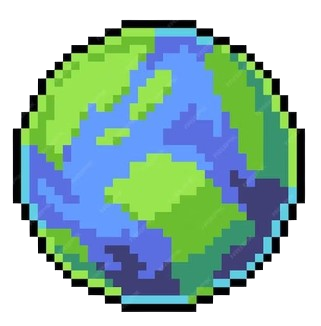
Different habitats, countless ways to be alive.

Layers of trees, fungi, insects, and hidden life.
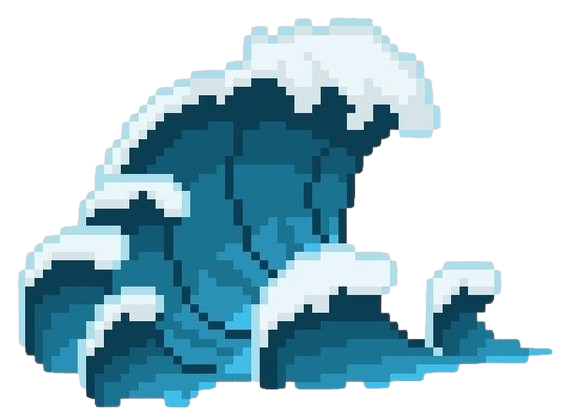
A vast blue world filled with remarkable diversity.
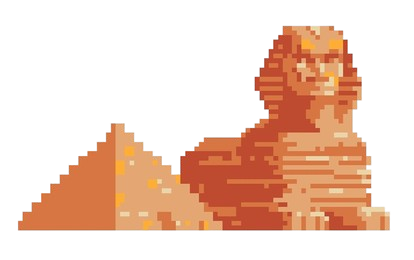
Life with extraordinary ways of handling scarce water.
✧ THE EXPLORER'S POST OFFICE ✧
Have you met a curious creature, spotted a lovely leaf, or discovered something tiny and wonderful? Leave a little letter about it here!
🌱 No real name, email, or exact location needed. Share only what you're comfortable sharing.